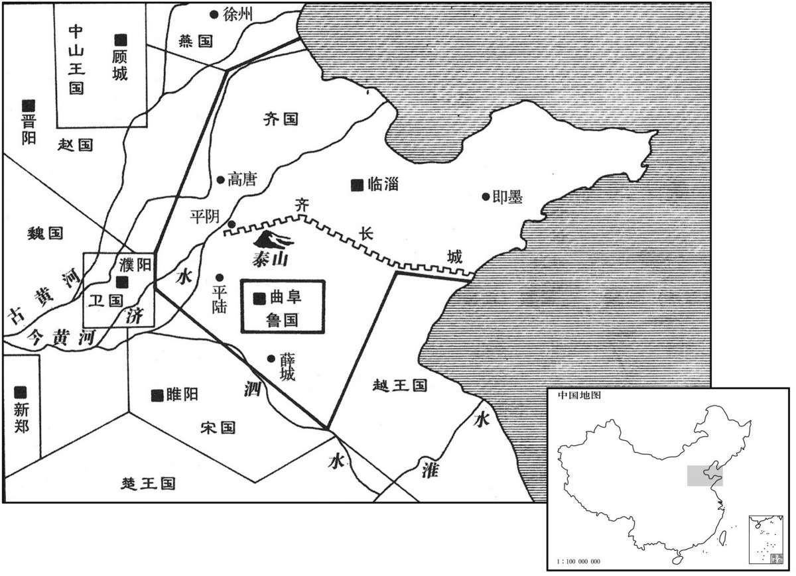

公元前355年资治通鉴：本年记事、原文与白话对照
按原书编年位置阅读；追叙和史论不等于本年发生的事件。白话采用所据译本，缺译不以生成译文补齐。
卷2 · 本年记事
公元前355年 · 显王在位第14年
十四年〔（丙寅、前三五五）〕

本年形势与背景参考图
齐威王、魏惠王会田于郊。惠王曰：“齐亦有宝乎？”威王曰：“无有。”惠王曰：“寡人国虽小，尚有径寸之珠，照车前后各十二乘者十枚。〔乘，绳证翻。〕岂以齐大国而无宝乎？”威王曰：“寡人之所以为宝者与王异。吾臣有檀子者，〔姓谱云：齐公族有食采于瑕丘檀城，因以为氏。〕使守南城，〔城在齐之南境，故曰南城。〕则楚人不敢为寇，泗上十二诸侯皆来朝。〔朝，直遥翻。〕吾臣有盼子者，使守高唐，则赵人不敢东渔于河。〔盼，匹苋翻，又披班翻。按丁度集韵，盼，与盻同。盼子，齐之同姓，即田盼也。班志，高唐县属平原郡。杜预曰：祝阿西北有高唐城。宋白曰：齐州章丘县，古高唐，春秋、战国之时为齐邑，故城在废禹城县西四十里。唐之禹城，汉祝阿也。〕吾吏有黔夫者，使守徐州，〔姓谱：齐有黔敖、则黔亦姓也，音其淹翻。司马彪曰：鲁国薛县，六国时曰徐州。徐，音舒。丁度集韵“徐”作“俆”，音同。〕则燕人祭北门，赵人祭西门，〔燕在齐之北，赵在齐之西。贾逵曰：燕、赵畏齐，故祭以求福。燕，因肩翻。〕徙而从者七千余家。吾臣有种首者，使备盗贼，则道不拾遗。〔种，章勇翻。〕此四臣者，将照千里，岂特十二乘哉！”惠王有惭色。
齐威王、魏惠王在效野约会狩猎。魏惠王问：“齐国也有什么宝贝吗？”齐威王说：“没有。”魏惠王说：“我的国家虽小，尚有十颗直径一寸以上、可以照亮十二乘车子的大珍珠。以齐国之大，难道能没有宝贝？”齐威王说：“我对宝贝的看法和你可不一样。我的大臣中有位檀子，派他镇守南城，楚国不敢来犯，泗水流域的十二个诸侯国都来朝贺。我的大臣中还有位盼子，使他守高唐，赵国人怕得不敢向东到黄河边来打渔。我的官吏中有位黔夫，令他守徐州，燕国人在北门、赵国人在西门望空礼拜求福，相随来投奔的多达七千余家。我的大臣中有位种首，让他防备盗贼，便出现路不拾遗的太平景象。这四位大臣，光照千里，岂止是十二乘车子呢！”魏惠王听了面色十分惭愧。
本段人物：魏惠王
秦孝公、魏惠王会于杜平。〔班志，京兆有杜陵县，故周之杜伯国也。史记灌婴传：婴以昌平侯食邑于杜平乡。正义曰：杜平在唐之同州澄城县界。魏世家作“社平”。〕
秦孝公、魏惠王在杜平举行会议。
本段人物：魏惠王
鲁共公薨，子康公毛立。〔共，读曰恭。〕
鲁国鲁共公去世，其子姬毛即位为鲁康公。